Introducción a JMS (Java Message Service)
Tarde o temprano llega el momento en el que todo desarrollador tiene la necesidad de intercomunicar aplicaciones. Existen múltiples soluciones para este tipo de problemas, pero dependiendo de las restricciones y requerimientos, el hecho de decidir como resolver esta situación puede ser otro problema en sí. Los requerimientos de negocio normalmente restringen el número de elementos que tienen un impacto directo como puede ser el rendimiento, escalabilidad, confiabilidad, etc...
Un Poco de Historia
A partir de los años 60, las grandes empresas invirtieron grandes cantidad de dinero en mainframes para las aplicaciones críticas, tales como procesamiento de datos, procesos financieros, análisis estadísticos, etc... La arquitectura mainframe ofrece muchos beneficios, como pueden ser la alta disponibilidad, redundancia, gran confiabilidad y escalabilidad, etc... Aunque estos sistemas eran extremadamente potentes (y caros), el acceso a estos sistemas se restringe a unas pocas opciones de entrada. Además, la interconectividad entre estos sistemas todavía no existe, lo que imposibilidad el procesamiento paralelo.
En los 70, los usuarios empezaron a acceder a los mainframes a través de terminales los cuales expandieron el uso de estos sistemas permitiendo el acceso concurrente de miles de usuarios. Durante esta época, se inventaron las redes de ordenadores, y se hizo posible la conectividad entre mainframes. En los 80, además de los terminales gráficos disponibles, los PCs llegaron al mercado y la emulación de terminales se convirtió en algo común. La interconectividad se convirtió en un aspecto muy importante ya que las aplicaciones desarrolladas para ejecutarse sobre PCs necesitaban acceder a los mainframes. Esta diversidad de plataformas y protocolos introdujo nuevos problemas que había que resolver.
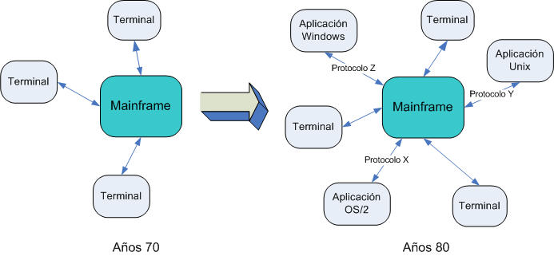
La conexión de un sistema fuente con un destino no era nada sencillo ya que cada hardware, protocolo y formato de datos requería un tipo diferente de adaptador. Conforme creció esta lista de adaptadores, también lo hizo las diferentes versiones de estos, lo que provoco que se convirtiera en difícil de mantener, hasta que el mantenimiento de los adaptadores llevaba más tiempo que el de los propios sistemas. Esto dio pie a la mensajería empresarial.
El objetivo de la mensajería empresarial era transferir información entre sistemas heterogéneos mediante el envío de mensajes de un sistema a otro. Ha habido diversas tecnologías con diferentes formas de mensajería a lo largo de los años, incluyendo:
- Soluciones para llamadas a procedimientos remotos que hacen funciones de middleware mediante una cola de mensajes, tales como COM y CORBA
- Soluciones para la notificación de eventos, comunicación entre procesos y colas de mensajes los cuales se incluyen en los sistemas operativos, como buffers FIFO, colas de mensajes, tubos (pipes), señales, sockets, ...
- Soluciones para una categoría de middleware que ofrece un mecanismo de mensajería fiable y asíncrono tales como WebShpereMQ, SonicMQ, TIBCO, Apache ActiveMQ, etc...
Así pues, existen muchos productos que ofrecen un mecanismo de mensajería, pero la que nos interesa a nosotros es la última categoría. La necesidad es la madre de la invención, y por eso apareció el middleware de mensajería. Se necesitaba un software para comunicar y transferir datos entre diferentes aplicaciones, sistemas operativos, protocolos e incluso diferentes lenguajes de programación. Además, el enrutamiento y la transformación de mensajes emergían como una parte importante de estas soluciones. Esto es lo que hoy día se conoce como MOM (Message-Oriente Middleware)
Mensajería
La mensajería es un método de comunicación entre componentes software o aplicaciones. Un sistema de mensajes es una facilidad peer-to-peer: un cliente de mensajería puede enviar mensajes a, o recibir mensajes de, otro cliente. Basta con que ambos se conecten a agentes de mensajería (MOMs) que proporcionen facilidades de creación, envío, recepción y lectura de mensajes. Los mensajes permiten una comunicación distribuída débilmente acoplada: un componente envía un mensaje a un destino y el receptor lo recoge del mismo.
Sin embargo, ni el emisor ni el receptor tienen que estar disponibles al mismo tiempo para comunicarse. De hecho, el emisor no tiene porqué saber nada del receptor, y viceversa. Ambos sólo deben saber el formato del mensaje y cual es el destino del mensaje. Esto hace que la mensajería difiera de tecnologías fuertemente acopladas, tales como RMI, que requieren que la aplicación cliente conozca los métodos de la aplicación remota.
Una aplicación utilizará la mensajería cuando queramos que:
- ciertos componentes no dependan del interfaz de otros componentes, de modo que éstos puedas sustituirse fácilmente
- la aplicación funcione independientemente de si todos los componentes se están ejecutando de forma simultánea
- el modelo de negocio de la aplicación permita a un componente enviar información a otro componente y que continúe su procesamiento sin esperar a una respuesta inmediata.
MOM
El Midleware Orientado a Mensajes (MOM) es un categoría de software para la intercomunicación de sistemas que ofrece una manera segura, escalable, confiable y con bajo acoplamiento. Los MOMs permiten la comunicación entre aplicaciones mediante un conjunto de APIs ofrecidas por cada proveedor y lenguaje, así pues, tendremos un API propietaria y diferente por cada MOM existente.
La idea principal de un MOM es que actúa como un mediador entre los emisores y los receptores de mensajes. Esta mediación ofrece un nuevo nivel de desacoplamiento en la mensajería empresarial. Así pues, un MOM se utiliza para mediar en la conectividad y la mensajería, no solo entre las aplicaciones y el mainframe, sino de una aplicación a otra.
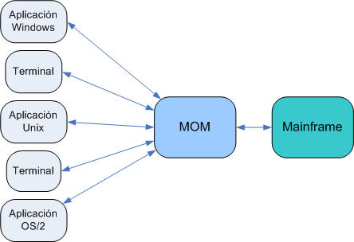
A un nivel más alto, los mensajes son unidades de información de negocio que se envían de una aplicación a otra a través de un MOM. Estos mensajes se envían y reciben por aquellos clientes que se conectan o subscriben a los mensajes. Este mecanismo es el que permite el acoplamiento débil entre emisores y receptores, ya que no se requiere que ambos estén conectados simultáneamente al MOM para enviar y/o recibir los mensajes. Esto es la mensajería asíncrona.
Los MOMs añadieron muchas características a la mensajería empresarial que previamente no eran posibles cuando los sistemas estaban fuertemente acoplados, tales como la persistencia de los mensajes, enrutamientos complejos de mensajes, transformación de los mensajes, etc... La persistencia de mensajes ayuda a mitigar las conexiones lentas o poco fiables realizadas por lo emisores y receptores o en una situación donde el fallo de un receptor no afecta al estado del emisor. El enrutamiento complejo de mensajes genera una cantidad de posibilidades que incluyen la entrega de un único mensaje a muchos receptores, enrutamiento de mensajes basados en propiedades del contenido del mensaje, etc... La transformación de mensajes permite la comunicación entre dos aplicaciones que no trabajan con el mismo formato de mensajes.
Además, la mayoría de MOMs existentes en el mercado ofrecen soporte para diversos protocolos de conectividad, como pueden ser HTTP/S, SSL, TCP/IP, UDP, etc... Incluso algunos proveedores ofrecen soporte para múltiples lenguajes de programación, facilitando del uso de MOMs en una amplia variedad de entornos. Este gran abanico de protocolos, lenguajes y APIs provoca la aparición de JMS para estandarizar la mensajería dentro del mundo Java.
Dominios de Mensajería
Existen dos modelos/dominios de mensajería:
- Punto a Punto (PTP), en la que un mensaje se consume por un único consumidor.
- Publicación/Subscripción (Pub/Sub), en la que un mensaje se consume por muchos consumidores.
Destacar que no todos los proveedores implementan ambos. Posteriormente veremos como JMS ofrece diferentes APIs para estos dos modelos.
Punto a Punto
Como hemos mencionado, bajo el modelo PTP, un mensaje se consume por un único consumidor (1:1), pero pueden haber varios emisores. El destino del mensaje es un cola definida y con un nombre (de manera opuesta a un tópico bajo el modelo Pub/Sub). Dicho de otra manera, se trata de un modelo FIFO, en el cual el mensaje encolado será el primero en salir de la cola (suponiendo que tienen el mismo nivel de prioridad).
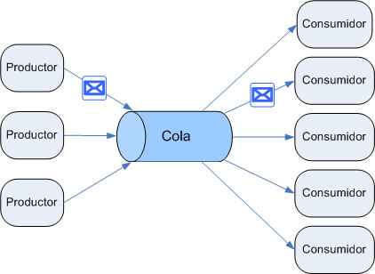
Así pues, bajo el modelo punto a punto, el emisor envía un mensaje a una cola definida (con nombre) con un nivel de prioridad, y el receptor extrae el mensaje de la cola. Al extraer el mensaje, el receptor envía un acuse de recibo a la cola para confirmar su correcta recepción (ACK).
Una aplicación PTP se construye bajo el concepto de colas de mensajes, productores y consumidores. A los emisores se les conoce como productores, y a los receptores como consumidores. Cada mensaje se envía a una cola específica, y los consumidores extraen los mensajes de la(s) cola(s) definidas. Estas colas retienen todos los mensajes enviados hasta que son consumidos o hasta que expiren.
Publicación/Subscripción
En este modelo, un mensaje puede consumirse por múltiples consumidores (1:N). El destino de un mensaje se conoce como tópico. Un tópico no funciona como un pila, ya que los mensajes en los tópicos no se encolan. De hecho, un nuevo mensaje en el tópico sobrescribirá cualquier mensaje existente. Así pues, bajo este modelo de difusión, los productores/emisores/publicadores publican el mensaje en un tópico, y los consumidores se subscriben al tópico.
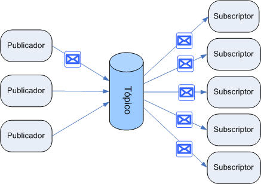
En este modelo, los publicadores (emisores) y los subscriptores (receptores) normalmente son anónimos y pueden, de forma dinámica, publicar o subscribirse a la jerarquía de contenidos. El sistema de mensajería se encarga de distribuir los mensajes que llegan al tópico de los múltiples publicadores a sus respectivos subscriptores, mediante un mecanismo push, de modo que los mensajes se envían automáticamente a los subscriptores.
La mensaria Pub/Sub tiene las siguientes características:
- Cada mensaje puede tener múltiples consumidores
- Existe un dependencia temporal entre los publicadores y los subscritores perecederos (non-durable) ya que un cliente que se subscribe a un tópico puede consumir los mensajes publicados después de la subscripción, y el subscriptor debe continuar conectado para consumir los posteriores mensajes.
El API JMS disminuye esta dependencia temporal permitiendo a los clientes crear subscripciones duraderas (durable). Las subscripciones duraderas permiten recibir mensajes que fueron enviados cuando los subscriptores no estaban conectados. De este modo, las subscripciones duraderas ofrecen flexibilidad y fiabilidad a las colas pero aun así permiten a los clientes enviar mensajes a múltiples recipientes.
Al poder haber múltiples publicadores y múltiples consumidores en el mismo tópico, el modelo Pub/Sub es especialmente útil en situaciones donde un grupo de aplicaciones quiere notificar a otras de un evento particular. Por ejemplo, una aplicación de CRM, al crear un cliente, puede necesitar comunicar a otras aplicaciones la creación de este cliente.
Java Message Service
JMS se separa de las APIs propietarias de cada proveedor para ofrece un API estándar (mediante un conjunto de interfaces) para la mensajería empresarial, de modo que mediante Java podamos enviar y recibir mensajes sin atarnos a ningún proveedor. JMS además minimiza el conocimiento de mensajería empresarial que debe tener un programador Java para desarrollar complejas aplicaciones de mensajería, mientras mantiene la portabilidad entre las diferentes implementaciones de proveedores JMS.
Cuidado, JMS no es un MOM. Se trata de una especificación que abstrae la interacción entre los clientes de mensajería y los MOMs del mismo modo que JDBC abstrae la comunicación con las BBDD relacionales. El siguiente gráfico muestra como JMS ofrece un API que utilizan los clientes de mensajería para interactuar con MOMs específicos via proveedores JMS que manejan la interacción con el MOM específico. De este modo, JMS reduce la barrera para la creación de aplicaciones de mensajería, facilitando la portabilidad a otros proveedores JMS.
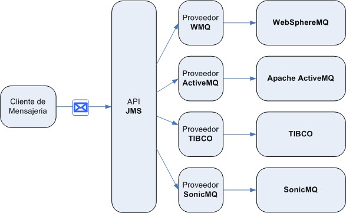
JMS permite que la comunicación entre componentes sea débilmente acoplada, asíncrona (el proveedor JMS entrega los mensajes al destino conforme llegan, y el cliente no tiene que solicitar los mensajes para recibirlos) y fiable (JMS asegura que cada mensaje se entrega una y solo una vez, y mediante inferiores niveles de fiabilidad permite la pérdida o el duplicado de mensajes en aquellas aplicaciones que requieran menos control).
Originalmente creada por Sun conjunto a un grupo de compañías de la industria de la mensajería empresarial, la primera versión de la especificación JMS data de 1998. La última release fue en 2002 con mejoras necesarias y desde entonces se trata de una tecnología estable y madura. La release JMS 1.1 unificó los dos conjuntos de APIs para trabajar con los dos dominios de mensajería, de modo que ahora sólo necesitamos una API para trabajar con ambos dominios.
JMS y JavaEE
A partir de la versión 1.3 de JavaEE, el API JMS forma parte de la especificación enterprise, y los desarrolladores la pueden utilizar dentro de componentes JavaEE.
El API JMS dentro de la plataforma JavaEE aporta:
- Aplicaciones cliente, componentes EJB y componentes web que pueden enviar o recibir de forma asíncrona mensajes JMS. Los clientes pueden recibir incluso los mensajes también de forma asíncrona.
- Beans de mensajes (Message-driven Beans - MDBs) que son un tipo de EJB que puede consumir mensajes de forma asíncrona. Un proveedor JMS (típicamente el servidor de aplicaciones) puede implementar de forma opcional el procesamiento concurrente de mensajes con MDBs.
- El envío y recepción de mensajes puede participar en transacciones distribuidas lo cual permite que las operaciones JMS y el acceso a BD ocurra dentro de una misma transacción.
Todo esto provoca que JMS mejore JavaEE simplificando el desarrollo de aplicaciones empresariales, mediante interacciones asíncronas, de confianza y con bajo acoplamiento entre los componentes JavaEE y los sistemas legacy que soportan la mensajería. A su vez, JavaEE mejora JMS mediante el soporte de transacciones distribuidas, y el procesamiento de mensajes de manera concurrente.
Arquitectura JMS
Para estandarizar el API, JMS define de un modo formal muchos conceptos y elementos del mundo de la mensajería:
-
Cliente JMS: Una aplicación 100% Java que envía y recibe mensajes. Cualquier componente JavaEE puede actuar como un cliente JMS.
- Clientes No-JMS: una aplicación escrita en un lenguaje que no es Java que envía y recibe mensajes.
- Productor JMS: una aplicación cliente que crea y envía mensajes JMS.
- Consumidor JMS: una aplicación cliente que recibe y procesa mensajes JMS.
- Proveedor JMS: implementación de los interfaces JMS el cual está idealmente escrito 100% en Java. El proveedor debe ofrecer prestaciones tanto de administración como de control de los recursos JMS. Toda implementación de la plataforma Java incluye un proveedor JMS.
- Mensaje JMS: elemento principal de JMS; objeto (cabecera + propiedades + cuerpo) que contiene la información y que es enviado y recibido por clientes JMS.
- Dominio JMS: Los dos estilos de mensajería: PTP y Pub/Sub.
-
Objetos Administrados: objetos JMS preconfigurados que contienen datos de configuración específicos del proveedor, los cuales utilizarán los clientes. Los clientes acceden a estos objetos mediante JNDI.
- Factoría de Conexión: los clientes utilizan una factoría para crear conexiones al proveedor JMS.
- Destino: objeto (cola/tópico) al cual se direccionan y envían los mensajes, y desde donde se reciben los mensajes.
Estos elementos interaccionan del siguiente modo:
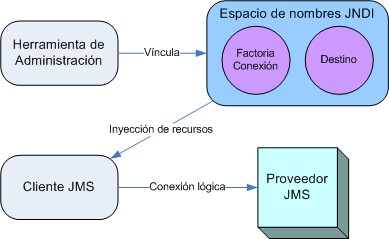
Las herramientas de administración permiten vincular destinos y factorías de conexión a través de un espacio de nombres JNDI. Entonces un cliente JMS puede consultar los objetos administrados en dicho espacio vía inyección de recursos y establecer conexiones lógicas con ellos a través del proveedor JMS.
El Modelo de Programación JMS
El esquema de trabajo con las interfaces JMS queda claramente definido en el siguiente gráfico:
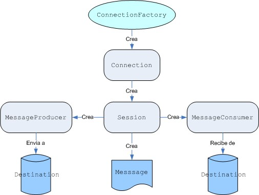
A continuación veremos en detalle cada uno de estos elementos con trozos de código que muestran como instanciarlos.
Objetos Administrados
Es más cómodo que los dos extremos de las aplicación JMS, la factoría de conexiones y los destinos, sean mantenidos mediante administración que de forma programativa. Esto se debe a que la tecnología que hay bajo estos objetos va a ser diferente dependiendo del proveedor JMS, y por tanto, su administración varía de un proveedor a otro.
Los clientes JMS acceden a estos objetos vía interfaces que son portables, de modo que un cliente pueda cambiar de implementación JMS sin necesidad de ninguna modificación. La administración de estos objetos (en nuestro caso a través de la consola de administración de Glassfish) se realiza dentro de un espacio de nombre JNDI, y los clientes acceden a él mediante la inyección de recursos vía anotaciones.
Factorías de Conexión
La factoría de conexión es el objeto que utiliza el cliente para crear una conexión con el proveedor, encapsulando un conjunto de parámetros de configuración de la conexión que han sido previamente definidos por el administrador del servidor de mensajes. Cada factoría de conexión es una instancia de ConnectionFactory, ya sea QueueConnectionFactory o TopicConnectionFactory.
Al inicio de un cliente JMS, normalmente se inyecta un recurso de factoría de conexión en un objeto ConnectionFactory. Por ejemplo, el siguiente fragmento de código muestra como se inyecta el recurso cuyo nombre JNDI es jms/ConnectionFactory y se asigna a un objeto ConnectionFactory:
@Resource(mappedName="jms/ConnectionFactory") private static ConnectionFactory connectionFactory;
Destinos
Un destino (javax.jms.Destination) es el objeto que utiliza el cliente para especificar el destino de los mensajes que produce y el origen de los mensajes que consume. En PTP los destinos son las colas (javax.jms.Queue), mientras que en Pub/Sub son los tópicos (javax.jms.Topic). Una aplicación JMS puede utilizar múltiples colas o tópicos (o ambos).
Para crear un destino mediante el servidor de aplicaciones, hay que crear un recurso JMS que especifique un nombre JNDI para el destino. Dentro de la implementación del servidor de aplicaciones, cada destino referencia a un destino físico.
Del mismo modo que con la factoría de conexiones, los destinos también se inyectan, pero en este caso, son específicos a un dominio u otro. Si quisiéramos crear una aplicación que con el mismo código fuente trabajase tanto con tópicos como con colas deberíamos asignar el destino a un objeto Destination.
El siguiente fragmento específica dos recursos, una cola y un tópico. Los nombres de los recursos se mapean con destinos creados via JNDI.
@Resource(mappedName="jms/Queue") private static Queue queue; @Resource(mappedName="jms/Topic") private static Topic topic;
El comportamiento de la aplicación dependerá del tipo de destino, no del tipo de factoría de conexión.
Conexiones
Una conexión encapsula una conexión virtual con el proveedor JMS, y puede representar un socket TCP/IP entre el cliente y un demonio del proveedor. Al crear una conexión, se crean objetos, tanto en la parte del cliente como en la del servidor, que gestionan el trasiego de mensajes entre el cliente y el sistema de mensajes. Mediante una conexión crearemos una o más sesiones en las que se producen y se consumen mensajes. Las conexiones implementan el interfaz javax.jms.Connection. A partir de una ConnectionFactory, podemos crear una conexión del siguiente modo:
Connection connection = connectionFactory.createConnection();
Al finalizar la aplicación, tenemos que cerrar toda conexión. Es muy importante cerrar las conexiones porque sino podemos provocar la sobrecarga del proveedor JMS. Al cerrar una conexión también cerramos sus sesiones y sus productores y consumidores de mensajes.
connection.close();
Antes de que nuestras aplicaciones puedan consumir mensajes, debemos llamar al método start de la conexión. Si queremos parar el envío de mensajes de forma temporal sin cerrar la conexión, podemos utilizar el método stop.
Sesiones
Una sesión es un contexto monohilo para producir y consumir mensajes. Mediante las sesiones crearemos:
- Productores de mensajes.
- Consumidores de mensajes.
- Mensajes.
- Navegadores de colas (Queue Browser).
- Colas y tópicos temporales.
Existen dos tipos de sesiones: las transaccionales y las no-transaccionales. Las transaccionales se caracterizan porque todos los mensajes enviados y recibidos se tratan como una unidad atómica que está sujeta al protocolo commit/rollback (confirmar o deshacer). En estas sesiones no es necesario realizar acuses de recibo o acknowledgements. En las no-transaccionales hay que seleccionar un tipo de acuse de recibo. En este caso, el tipo Session.AUTO_ACKNOWLEDGE indica que la sesión acusa el recibo de un mensaje una vez que la aplicación receptora lo ha procesado.
Las sesiones implementan el interfaz javax.jms.Session. Tras crear una conexión, la utilizaremos para crear una sesión:
Session session = connection.createSession(false, Session.AUTO_ACKNOWLEDGE);
El primer parámetro indica que la sesión no es transaccional, y el segundo que la sesión confirmará la recepción exitosa de los mensajes de forma automática mediante un acuse de recibo.
Para crear una sesión transaccional, utilizaremos el siguiente fragmento:
Session session = connection.createSession(true, 0);
En este caso, hemos creado una sesión transaccional pero que no especifica la confirmación de los mensajes.
Productores de Mensajes
Un productor de mensajes es un objeto creado por una sesión y que se utiliza para enviar mensajes a un destino. Implementa el interfaz javax.jms.MessageProducer. A partir de la sesión y un destino, podemos crear diferentes tipos de productores:
MessageProducer producer = session.createProducer(dest); MessageProducer producer = session.createProducer(queue); MessageProducer producer = session.createProducer(topic);
Una vez creado un productor y el mensaje, para enviar mensajes utilizaremos el método send:
producer.send(message);
Se puede crear un productor sin identificar mediante un null como parámetro en el método createProducer. Mediante este tipo de productores, el destino no se especifica hasta que se envía un mensaje, especificándolo como primer parámetro.
MessageProducer anonProd = session.createProducer(null); anonProd.send(dest, message);
Consumidores de Mensajes
Un consumidor de mensajes es un objeto creado por una sesión y que se utiliza para recibir mensajes enviados desde un destino. Implementa el interfaz javax.jms.MessageConsumer. A partir de la sesión y un destino, podemos crear diferentes tipos de productores:
MessageConsumer consumer = session.createConsumer(dest); MessageConsumer consumer = session.createConsumer(queue); MessageConsumer consumer = session.createConsumer(topic);
Un consumidor de mensajes permite a un cliente JMS registrar su interés en un destino con un proveedor JMS. El proveedor gestiona la entrega de mensajes desde un destino a los consumidores registrados en dicho destino.
Tras crear un consumidor, éste queda activo y lo podemos utilizar para recibir mensajes. Para desactivar al consumidor, utilizaremos el método close. La entrega de mensajes no comienza hasta que no se inicia la conexión creada mediante el método start.
Para consumir un mensaje de forma síncrona utilizaremos el método receive. Esta operación se puede realizar en cualquier momento siempre y cuando previamente hayamos iniciado la conexión (mediante el método start):
connection.start(); Message m = consumer.receive(); connection.start(); Message m = consumer.receive(1000); // timeout tras un segundo
Para consumir un mensaje de forma asíncrona necesitamos un listener de mensajes.
Listener de Mensajes
Un listener de mensajes es un objeto que actúa como un manejador de eventos asíncronos para mensajes. Este objeto implementa el interfaz javax.jms.MessageListener, el cual únicamente contiene el método onMessage. En este método definiremos las acciones a realizar con el mensaje recibido.
Para registrar el listener utilizaremos el método setMessageListener del interfaz MessageConsumer. Por ejemplo, si tenemos una clase Listener que implementa el interfaz MessageListener, podemos registrar el listener del siguiente modo:
Listener myListener = new Listener(); consumer.setMessageListener(myListener);
Tras registrar el listener, podemos llamar al método start de la conexión para empezar la entrega de mensajes. Si lo hacemos antes, perderemos mensajes. Cuando comienza el envío de los mensajes, cada vez que se recibe un mensaje, el proveedor JMS llama al método onMessage del listener de mensajes. El método onMessage recibe como parámetro un objeto de tipo Message, con los datos recibidos. Nuestro método onMessage debería capturar todas las excepciones. No debe lanzar excepciones checked, y relanzar excepciones unchecked (RuntimeException) se considera un error de programación.
Un listener de mensajes no es específico para un tipo de destino en particular. El mismo listener puede obtener mensajes tanto de una cola como de un tópico, dependiendo del tipo de destino para el cual se creó el consumidor de mensajes. Sin embargo, un listener normalmente espera un tipo y formato específico de mensaje.
La sesión utilizada para crear el consumidor de mensajes serializa la ejecución de todos los listener de mensajes registrados con la sesión. En un instante cualquiera, uno y solo uno de los listener de mensajes de la sesión está en ejecución.
Mensajes
Los mensajes también se crean a partir de objetos de sesión. Por ejemplo, para crear un mensaje de tipo texto:
TextMessage message = session.createTextMessage();
Los mensajes encapsulan información a intercambiar entre aplicaciones. Un mensaje contiene tres componentes: los campos de la cabecera, las propiedades específicas de la aplicación y el cuerpo del mensaje.
Los partes de cada mensaje así como los diferentes tipos de mensajes los estudiaremos en la siguiente sesión.
Modelos Específicos
Hasta ahora nos hemos centrado en el API JMS, el cual es común para ambos dominios de mensajería. A continuación veremos cada uno de ellos en detalle.
API Punto a Punto
El API punto a punto se refiere de manera específica a los interfaces basados en el uso de colas, de modo que los interfaces de este API son:
- QueueConnectionFactory
- Queue
- QueueConnection
- QueueSession
- QueueSender
- QueueReceiver
Igual que en modelo general JMS, obtendremos tanto los objetos QueueConnectionFactory como Queue del proveedor JMS via JNDI (mediante la inyección de código vía anotaciones). Como puede observarse, la mayoria de los interfaces añaden el sufijo Queue al nombre del interfaz JMS. Las excepciones son el interfaz Destination, que se llama Queue, y los interfaces MessageProducer y MessageConsumer que pasan a ser QueueSender y QueueReceiver, respectivamente.
A continuación podemos ver el mismo gráfico de antes pero ahora respecto al modelo punto a punto.
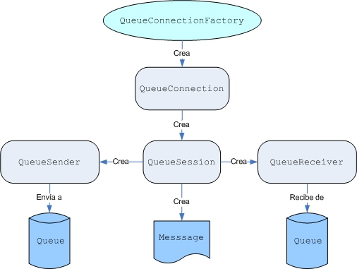
Las aplicaciones que usan un modelo de mensajería punto a punto normalmente utilizan este API específico en vez del API general.
API Publicación/Subscripción
Cada elemento específico para las colas, tiene su correspondencia con el uso de tópicos. Así pues, tendremos los siguientes interfaces:
- TopicConnectionFactory
- Topic
- TopicConnection
- TopicSession
- TopicPublisher
- TopicSubscriber
A continuación podemos ver el mismo gráfico de antes pero ahora respecto al modelo publish-subscribe.
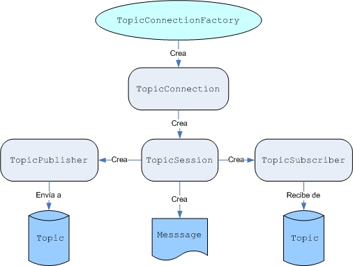
Recursos JMS en Glassfish
Para una comunicación necesitamos dos tipos de objetos administrados: una factoría de conexiones y una cola (o un tópico). Estos objetos administrados están, como su nombre indica, gestionados por Glassfish. En Glassfish, como en otros servidores de aplicaciones, el administrador puede añadir o actualizar estos recursos. Para ver como se hace entremos en la consola de administración.
Una vez estemos en la consola, consultaremos el panel izquierdo y seleccionaremos Recursos y a su vez Recursos JMS:
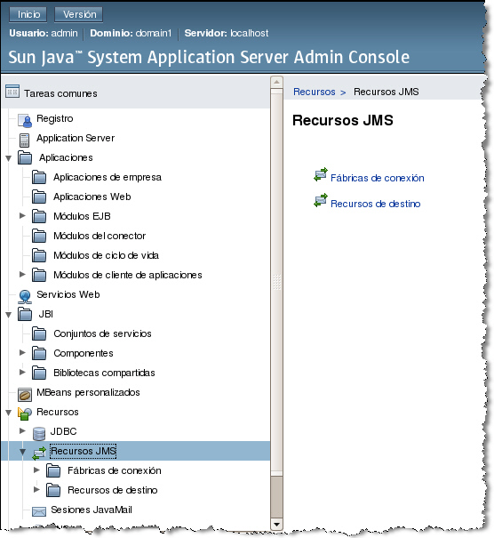
Factorías de Conexión
Entonces, si pinchamos en el panel de la derecha, tenemos acceso a Fábricas de conexión y Recursos de destino. Al pinchar en la fábricas de conexión podemos crear una nueva o bien editar las que estén creadas.
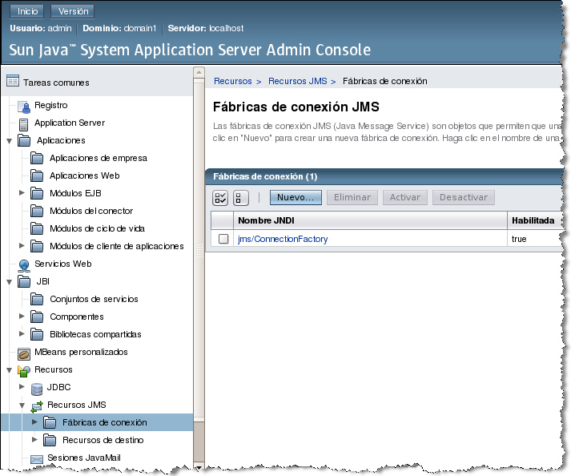
En el ejemplo anterior, hay creada una de ellas cuyo nombre JNDI es jms/ConnectionFactory y aparece como habilitada. Si queremos ver sus parámetros hacemos click y vemos lo siguiente:
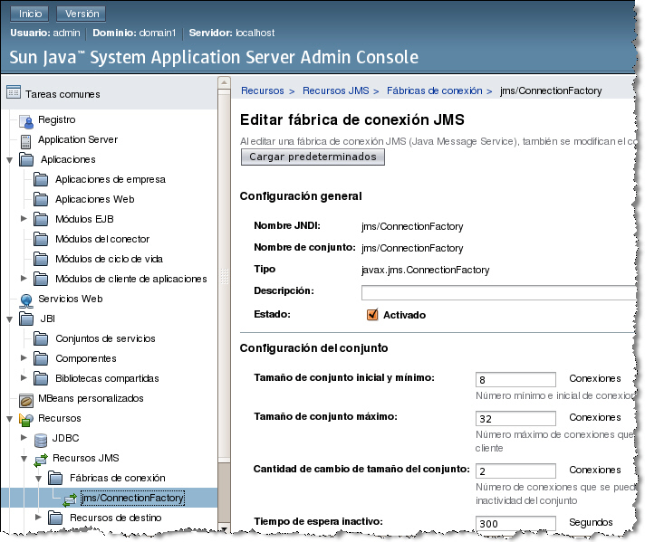
Destinos
De la misma forma, si consultamos Recursos de destino podemos ver los nombres JNDI de las colas y tópicos que están habilitados o, en su defecto, crearlos.
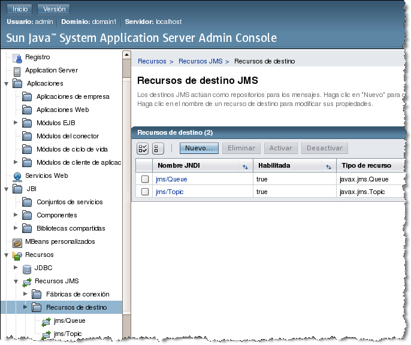
Desde el panel de destinos se pueden activar, desactivar, crear, borrar.
Pero en cualquier caso, ya sea a través de Ant o del acceso a la consola, la factoría y los destinos a usar deberán estar creados antes de que el cliente se ejecute.
Una Aplicación JMS
Una aplicación JMS será tan simple o compleja como sean sus requisitos de negocio. Igual que con JDBC, es común aislar el código JMS mediante componentes o en su propia capa.
Los pasos que seguirá todo componente JMS serán:
- Adquirir una factoría de conexión.
- Crear una conexión mediante la factoría de conexión.
- Comenzar la conexión.
- Crear una sesión a partir de la conexión.
- Adquirir un destino.
- Dependiendo de si enviamos o recibimos
- Crear un productor.
- Crear un productor.
- Crear un mensaje y adjuntarlo a su destino.
- Crear un consumidor.
- Crear un consumidor.
- Opcionalmente registrar un listener de mensajes
- Crear un productor.
- Enviar/Recibir el/los mensaje/s
- Cerrar los objetos (consumidor, productor, sesión, conexión)
A continuación, veremos un ejemplo por cada tipo de dominio de JMS. Ambos ejemplos se basan
Ejemplo de PTP
A continuación vamos a ver un ejemplo de dos clientes PTP, uno que produce mensajes a una cola, y otro que consume dichos mensajes de la misma cola.
Lo primero que tenemos que hacer es crear un proyecto de cliente empresarial (File -> New Project -> Java EE -> Enterprise Application Client).
Productor
package org.especialistajee.jms;
// imports
public class Productor {
@Resource(mappedName = "jms/ConnectionFactory")
private static ConnectionFactory connectionFactory;
@Resource(mappedName = "jms/Queue")
private static Queue queue;
public void enviaMensajeCola(String mundo) throws JMSException {
Connection connection = null;
Session session = null;
MessageProducer producer = null;
Message message = null;
boolean esTransaccional = false;
try {
connection = connectionFactory.createConnection();
// Recordar llamar a start() para permitir el envio de mensajes
connection.start();
// Creamos una sesion sin transaccionalidad y con envio de acuse automatico
session = connection.createSession(esTransaccional, Session.AUTO_ACKNOWLEDGE);
// Creamos el productor a partir de una cola
producer = session.createProducer(queue);
// Creamos un mensaje sencillo de texto
message = session.createTextMessage(mundo);
// Mediante le productor, enviamos el mensaje
producer.send(message);
System.out.println("Enviado mensaje [" + mundo + "]");
} finally {
// Cerramos los recursos
producer.close();
session.close();
connection.close();
}
}
public static void main(String[] args) throws Exception {
Productor p = new Productor();
p.enviaMensajeCola("Hola Mundo");
p.enviaMensajeCola("Adios Mundo");
}
}
Este ejemplo demuestra los pasos necesarios para crear un producto JMS y enviar un mensaje a un destino. Destacar que este cliente no se preocupa de que haya un consumidor JMS al otro lado esperando un mensaje. La mediación de los mensajes entre los productores y los consumidores es tarea del MOM, y de ahí una de las grandes virtudes de las aplicaciones JMS.
Una vez que el mensaje se ha enviado al destino, un consumidor recibirá el mensaje.
Consumidor
El consumidor lo hemos separado en dos clases distintas para diferenciar el tratamiento síncrono del asícrono.
Consumidor Síncrono
package org.especialistajee.jms;
// imports
public class ConsumidorSincrono {
@Resource(mappedName = "jms/ConnectionFactory")
private static ConnectionFactory connectionFactory;
@Resource(mappedName = "jms/Queue")
private static Queue queue;
public void recibeMensajeSincronoCola() throws JMSException {
Connection connection = null;
Session session = null;
MessageConsumer consumer = null;
TextMessage message = null;
boolean esTransaccional = false;
try {
connection = connectionFactory.createConnection();
// Recordar llamar a start() para permitir la recepción de mensajes
connection.start();
// Creamos una sesion sin transaccionalidad y con envio de acuse automatico
session = connection.createSession(esTransaccional, Session.AUTO_ACKNOWLEDGE);
// Creamos el consumidor a partir de una cola
consumer = session.createConsumer(queue);
// Recibimos un mensaje de texto
message = (TextMessage) consumer.receive();
// Sacamos el mensaje por consola
System.out.println("Recibido sincrono [" + message.getText() + "]");
System.out.println("Fin sincrono");
} finally {
// Cerramos los recursos
consumer.close();
session.close();
connection.close();
}
}
public static void main(String[] args) throws Exception {
ConsumidorSincrono p = new ConsumidorSincrono();
p.recibeMensajeSincronoCola();
}
}
En el método de tratamiento síncrono, el método receive bloquea la ejecución hasta que no recibe el mensaje.
Una llamada como ésta, sin argumentos, o con un argumento 0, bloquea al receptor indefinidamente hasta que se produce un mensaje o se cierra la aplicación. Si queremos esperar solo por un tiempo limitado podemos pasarle un argumento long que indica un timeout. Si no queremos esperar nada, llamaremos al método receiveNoWait() (sin argumentos) que recibe el siguiente mensaje si hay alguno disponible, y devuelve null en otro caso.
Consumidor Asíncrono
package org.especialistajee.jms;
// imports
public class ConsumidorAsincrono {
@Resource(mappedName = "jms/ConnectionFactory")
private static ConnectionFactory connectionFactory;
@Resource(mappedName = "jms/Queue")
private static Queue queue;
public void recibeMensajeAsincronoCola() throws JMSException {
Connection connection = null;
Session session = null;
MessageConsumer consumer = null;
TextoListener listener = null;
boolean esTransaccional = false;
try {
connection = connectionFactory.createConnection();
// Creamos una sesion sin transaccionalidad y con envio de acuse automatico
session = connection.createSession(esTransaccional, Session.AUTO_ACKNOWLEDGE);
// Creamos el consumidor a partir de una cola
consumer = session.createConsumer(queue);
// Creamos el listener, y lo vinculamos al consumidor -> asincrono
listener = new TextoListener();
consumer.setMessageListener(listener);
// Llamamos a start() para empezar a consumir
connection.start();
// Sacamos el mensaje por consola
System.out.println("Fin asincrono");
} finally {
// Cerramos los recursos
consumer.close();
session.close();
connection.close();
}
}
public static void main(String[] args) throws Exception {
ConsumidorAsincrono p = new ConsumidorAsincrono();
p.recibeMensajeAsincronoCola();
}
}
De la parte asíncrona, destacar la necesidad de crear un MessageListener que será el encargado de recibir el mensaje y realizar las acciones oportunas. Por ello, una vez creado el listener, se le adjunta al consumidor.
A continuación podemos ver el listener de mensajes para la recepción asíncrona, el cual implementa el método onMessage:
package org.especialistajee.jms;
// imports
public class TextoListener implements MessageListener {
/**
* Casts del mensaje a un mensaje de texto y se muestra por consola
* @param message mensaje de entrada
*/
@Override
public void onMessage(Message message) {
TextMessage msg = null;
try {
if (message instanceof TextMessage) {
msg = (TextMessage) message;
System.out.println("Recibido asincrono [" + msg.getText() + "]");
} else {
System.err.println("El mensaje no es de tipo texto");
}
} catch (JMSException e) {
System.err.println("JMSException en onMessage(): " + e.toString());
} catch (Throwable t) {
System.err.println("Exception en onMessage():" + t.getMessage());
}
}
}
Si lanzamos el consumidor antes del productor entonces éste estará esperando hasta que el productor los envíe y obtendremos la misma salida. Esto sucede si usamos colas, cuando usamos tópicos como destinos las cosas cambian, como veremos en la siguiente sección.
Si lanzamos el consumidor después del productor, el primero recibirá los mensajes dependiendo del tiempo de vida de los mismos (que por defecto es 0).
Ejemplo de Pub/Sub
De igual modo, con el modelo publish/subscribe tenemos los siguientes ejemplos:
Publicador
package org.especialistajee.jms;
// imports
public class Publicador {
@Resource(mappedName = "jms/ConnectionFactory")
private static ConnectionFactory connectionFactory;
@Resource(mappedName = "jms/Topic")
private static Topic topic;
public void enviaMensajeTopico(String mundo) throws JMSException {
Connection connection = null;
Session session = null;
MessageProducer publisher = null;
Message message = null;
boolean esTransaccional = false;
try {
connection = connectionFactory.createConnection();
// Recordar llamar a start() para permitir el envio de mensajes
connection.start();
// Creamos una sesion sin transaccionalidad y con envio de acuse automatico
session = connection.createSession(esTransaccional, Session.AUTO_ACKNOWLEDGE);
// Creamos el publicador a partir de un topico
publisher = session.createProducer(topic);
// Creamos un mensaje sencillo de texto
message = session.createTextMessage(mundo);
// Mediante el publicador, enviamos el mensaje
publisher.send(message);
System.out.println("Enviado mensaje [" + mundo + "]");
} finally {
// Cerramos los recursos
publisher.close();
session.close();
connection.close();
}
}
/**
* Creamos y lanzamos el publicador
*/
public static void main(String[] args) throws Exception {
Publicador p = new Publicador();
p.enviaMensajeTopico("Hola Mundo");
p.enviaMensajeTopico("Adios Mundo");
}
}
Si comparamos el código del productor con el del publicador podemos ver que es el mismo excepto a la hora de crear el MessageProducer. En el caso de PTP se utiliza una cola, y para Pub/Sub un tópico.
Subscriptor
Del mismo modo que con los consumidores, hemos separado los subscriptores en dos:
Subscriptor Síncrono
package org.especialistajee.jms;
// imports
public class SubscriptorSincrono {
@Resource(mappedName = "jms/ConnectionFactory")
private static ConnectionFactory connectionFactory;
@Resource(mappedName = "jms/Topic")
private static Topic topic;
public void recibeMensajeSincronoTopico() throws JMSException {
Connection connection = null;
Session session = null;
MessageConsumer subscriber = null;
TextMessage message = null;
boolean esTransaccional = false;
try {
connection = connectionFactory.createConnection();
// Recordar llamar a start() para permitir el envio de mensajes
connection.start();
// Creamos una sesion sin transaccionalidad y con envio de acuse automatico
session = connection.createSession(esTransaccional, Session.AUTO_ACKNOWLEDGE);
// Creamos el subscriptor a partir de un topico
subscriber = session.createConsumer(topic);
// Recibimos un mensaje de texto
message = (TextMessage) subscriber.receive();
// Sacamos el mensaje por consola
System.out.println("Recibido sincrono [" + message.getText() + "]");
System.out.println("Fin sincrono");
} finally {
// Cerramos los recursos
subscriber.close();
session.close();
connection.close();
}
}
public static void main(String[] args) throws Exception {
SubscriptorSincrono p = new SubscriptorSincrono();
p.recibeMensajeSincronoTopico();
}
}
Al comparar con el consumidor, este subscriptor también es idéntico excepto a la hora de crear el MessageConsumer (éste se basa en un tópico).
Subscriptor Asíncrono
package org.especialistajee.jms;
// imports
public class SubscriptorAsincrono {
@Resource(mappedName = "jms/ConnectionFactory")
private static ConnectionFactory connectionFactory;
@Resource(mappedName = "jms/Topic")
private static Topic topic;
public void recibeMensajeAsincronoTopico() throws JMSException {
Connection connection = null;
Session session = null;
MessageConsumer subscriber = null;
TextoListener listener = null;
boolean esTransaccional = false;
try {
connection = connectionFactory.createConnection();
// Creamos una sesion sin transaccionalidad y con envio de acuse automatico
session = connection.createSession(esTransaccional, Session.AUTO_ACKNOWLEDGE);
// Creamos el subscriptor a partir de un topico
subscriber = session.createConsumer(topic);
// Creamos el listener, y lo vinculamos al subscriptor -> asincrono
listener = new TextoListener();
subscriber.setMessageListener(listener);
// Llamamos a start() para empezar a consumir
connection.start();
// Sacamos el mensaje por consola
System.out.println("Fin asincrono");
} finally {
// Cerramos los recursos
subscriber.close();
session.close();
connection.close();
}
}
public static void main(String[] args) throws Exception {
SubscriptorAsincrono p = new SubscriptorAsincrono();
p.recibeMensajeAsincronoTopico();
}
}
Y el asíncrono también es similar, tanto que el listener que utilizamos es semejante al utilizado en el ejemplo del consumidor asíncrono.
Si ejecutamos el subscriptor antes que el publicador, veremos que el subscriptor síncrono se cuelga puesto que los mensajes que habían sido enviados antes de lanzar el subscriptor no pueden ser recibidos. Esto se debe al modelo Pub/sub, ya que un cliente subscrito a un tópico puede leer mensajes de él solo después de haber realizado la subscripción, y en este caso sucede al contrario. Ocurre lo mismo en el caso asíncrono.